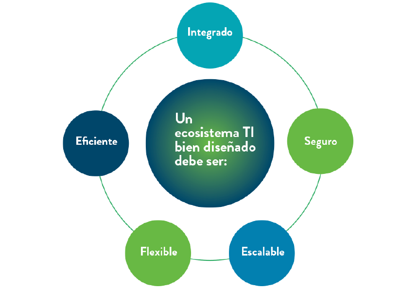
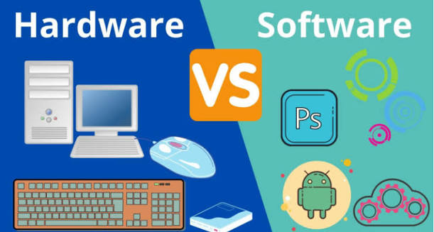
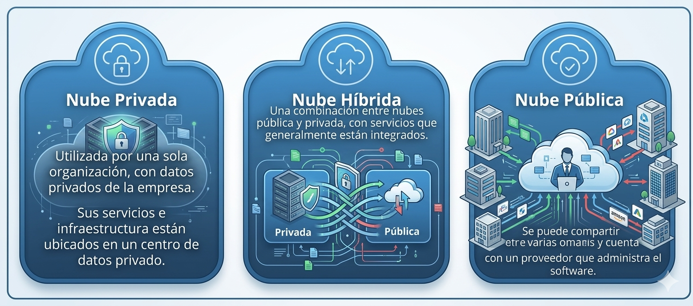

Introducción
Las Tecnologías de la Información (TI) son el conjunto de herramientas, infraestructuras, sistemas y servicios que permiten capturar, procesar, almacenar y transmitir información por medios digitales. En un contexto de transformación digital constante, entender cómo funcionan es cada vez más relevante sin importar la especialidad de cada profesional.
En las organizaciones modernas, las TI hacen posible automatizar procesos, mejorar la toma de decisiones, optimizar recursos e impulsar la innovación. Desde el comercio electrónico hasta los sistemas de gestión empresarial, están presentes en prácticamente todos los sectores productivos.
Ecosistema TI
El ecosistema de Tecnologías de la Información agrupa tecnologías, recursos y procesos que interactúan entre sí para gestionar y aprovechar la información dentro de una organización. Entenderlo ayuda a ver cómo la infraestructura, el software, los datos y las personas se integran para sostener las operaciones digitales.
¿Qué es un ecosistema TI?
Es el conjunto organizado e interdependiente de tecnologías, personas, procesos y herramientas que le permite a una empresa operar digitalmente. Funciona de forma similar a un ecosistema natural:
- Cada elemento cumple un rol específico.
- Los elementos se relacionan entre sí.
- Dependen unos de otros para mantener el equilibrio tecnológico del conjunto.

Un ecosistema TI bien diseñado debe cumplir cinco condiciones: ser integrado, seguro, escalable, flexible y eficiente.
Componentes del Ecosistema TI
El ecosistema TI se organiza en cuatro grandes categorías que trabajan de forma coordinada: infraestructura tecnológica, software, datos, y personas y procesos.
Infraestructura tecnológica — la base física
Agrupa todo el hardware y las redes necesarios para que el sistema informático funcione:
Software — la parte lógica
Comprende los programas que permiten operar la tecnología:
Datos — el recurso más valioso
Los datos son el eje del ecosistema TI, porque son la base de todo análisis, toma de decisiones y automatización. Incluyen las bases de datos, la información de clientes, ventas, inventarios y procesos, los sistemas de almacenamiento, y las políticas de calidad, seguridad y privacidad (cifrado, respaldos).
Personas y procesos — el componente humano y metodológico
Del lado humano participan usuarios finales, administradores de TI, soporte técnico, ingenieros de redes, desarrolladores de software y analistas de datos. Del lado metodológico, se apoyan en marcos como:
- ITIL, para la gestión de servicios de TI.
- COBIT, para la gobernanza tecnológica.
- DevOps, que combina automatización, desarrollo y operaciones.
- ISO 27001, para la gestión de seguridad de la información.
Estos marcos aseguran que la tecnología se use de forma organizada, controlada y eficiente.
Infraestructura Tecnológica
La infraestructura tecnológica es la base sobre la que operan los sistemas de información de una organización: recursos físicos y virtuales que procesan, almacenan, transmiten y protegen la información, garantizando que la tecnología funcione de forma eficiente, segura y disponible. Es la columna vertebral del ecosistema TI y se divide en cuatro capas:
El ecosistema TI integra infraestructura, software, datos y personas para lograr operaciones más eficientes, seguras y estratégicas. La tecnología deja de ser solo un recurso técnico y se convierte en un motor de transformación que facilita la toma de decisiones y la adaptación a un entorno cada vez más digital.
Transformación Digital
La transformación digital es el proceso por el cual una organización incorpora tecnologías digitales en todas sus áreas y operaciones, con el fin de mejorar su funcionamiento, automatizar procesos, optimizar la experiencia del cliente y habilitar nuevos modelos de negocio. No se trata solo de adoptar herramientas nuevas, sino de cambiar la forma en que la organización opera y genera valor a partir de los datos.
Características clave
- Cambia la forma en que la empresa opera y genera valor.
- No se limita a la tecnología: involucra cultura, liderazgo y talento.
- Exige replantear procesos, sistemas y estrategias.
- Se apoya en el uso intensivo de datos y automatización.
Factores que la impulsan
- La competencia global y la presión constante por innovar.
- La necesidad de ganar eficiencia operativa.
- La mayor disponibilidad de tecnologías accesibles: nube, IA, automatización.
- Clientes cada vez más exigentes y digitalizados.
Ámbitos donde impacta
- Procesos operativos: automatización y monitoreo en tiempo real.
- Modelo de negocio: servicios digitales, comercio electrónico, plataformas.
- Cultura organizacional: trabajo remoto y colaboración digital.
- Atención al cliente: autoservicio, chatbots y personalización.
En síntesis, la transformación digital redefine la forma en que operan las organizaciones. Comprenderla permite aplicar la tecnología para optimizar procesos, generar innovación y construir ventajas competitivas en un entorno cada vez más digital.
Componentes Tecnológicos
Son los elementos que hacen posible el funcionamiento de los sistemas de información: recursos físicos, programas y servicios especializados que trabajan en conjunto para procesar datos, automatizar tareas y sostener las operaciones digitales de una empresa.
Hardware
Corresponde a los componentes físicos del sistema informático. Incluye computadoras, laptops, tablets y móviles; servidores y centros de datos; equipos de red (switches, routers, firewalls); impresoras, escáneres y otros periféricos; y equipos IoT como sensores, cámaras y terminales. Sus funciones principales son proveer capacidad de cómputo, almacenar información, permitir la conectividad y servir como punto de acceso al sistema TI.

Software
Es el conjunto de programas que permite ejecutar tareas sobre el hardware. Incluye sistemas operativos (Windows, Linux, Android), software de aplicación (ERP, CRM, POS, CAD), software en la nube tipo SaaS (Microsoft 365, Google Workspace), bases de datos, apps móviles y web, y software de seguridad (antivirus, monitoreo, IDS/IPS). Sus funciones abarcan la automatización de procesos, la gestión y análisis de datos, el control de equipos y redes, y la comunicación interna y externa.
Servicios tecnológicos
Son servicios especializados que gestionan, mantienen y optimizan el uso de la infraestructura tecnológica, complementando o administrando los sistemas TI. Entre los principales tipos están la computación en la nube (IaaS, PaaS, SaaS, FaaS), el soporte técnico, la ciberseguridad gestionada, la consultoría TI, la integración de sistemas, el desarrollo de software y las telecomunicaciones (internet, VPN, telefonía IP).
Sus beneficios incluyen mayor escalabilidad, reducción de costos, más velocidad de implementación y acceso a expertos especializados.
Tendencias Tecnológicas Actuales
Las tendencias tecnológicas actuales están transformando la forma en que las organizaciones gestionan la información, desarrollan servicios y toman decisiones. La computación en la nube, la ciberseguridad y la inteligencia artificial permiten mayor eficiencia, automatización y protección de los datos, y se han convertido en pilares de la innovación y la competitividad digital.
Computación en la nube
Permite usar infraestructura, plataformas y software a través de internet, sin necesidad de mantener servidores físicos propios. Existen cuatro niveles de servicio, cada uno con distinto grado de gestión de la infraestructura:
Además del tipo de servicio, existen distintos modelos de implementación:
- Nube pública: servicios ofrecidos al público en general (AWS, Google Cloud).
- Nube privada: infraestructura exclusiva para una sola empresa.
- Nube híbrida: combina nube privada y pública; es el modelo más usado hoy.
- Multinube: uso simultáneo de varios proveedores de nube.

Entre sus principales beneficios están la escalabilidad (ajustar recursos según la demanda), el ahorro de costos (sin necesidad de hardware físico propio), la disponibilidad (acceso global y constante), la seguridad avanzada (firewalls y cifrado), las actualizaciones automáticas, la flexibilidad (pagar solo por lo que se usa) y la colaboración remota desde cualquier lugar.
Ciberseguridad
Es el conjunto de prácticas, tecnologías, políticas y procesos orientados a proteger sistemas, redes, aplicaciones y datos frente a ataques informáticos y accesos no autorizados. Busca garantizar la confidencialidad, integridad y disponibilidad de la información, evitando pérdidas de datos, fraudes o interrupciones del servicio. Para lograrlo se combinan herramientas técnicas (firewalls, detección de intrusiones, cifrado, antivirus, autenticación multifactor) con políticas de seguridad y capacitación de usuarios, ya que la protección depende tanto de la tecnología como del comportamiento de las personas.
Las principales amenazas a las que se enfrenta una organización son:
A esto se suman las vulnerabilidades: sistemas desactualizados que quedan expuestos a cualquiera de las amenazas anteriores.
Frente a estos riesgos, las medidas de protección se dividen en dos niveles:
Inteligencia Artificial
La IA permite construir sistemas capaces de analizar datos, reconocer patrones y automatizar decisiones. Se puede clasificar según su alcance y nivel de capacidad para imitar o superar la inteligencia humana:
También puede clasificarse según la técnica de aprendizaje que utiliza:
- Aprendizaje supervisado: el modelo aprende a partir de datos etiquetados.
- Aprendizaje no supervisado: encuentra patrones en datos sin etiquetar.
- Aprendizaje por refuerzo: el sistema aprende mediante recompensas y penalizaciones.
- IA generativa: crea contenido nuevo — texto, imágenes, audio o video.
Entre sus beneficios destacan la automatización de tareas repetitivas (con menos errores humanos), el análisis rápido de grandes volúmenes de datos, una mejor toma de decisiones basada en predicciones, la optimización de procesos empresariales (logística, producción, finanzas), el aumento de productividad con menor costo operativo, el impulso a la innovación en sectores como medicina, educación e industria, y la personalización de experiencias mediante recomendaciones.
Caso: Transformación Digital de MediLog Health Services
MediLog es una empresa internacional dedicada a la gestión de historias clínicas y al monitoreo de pacientes. Ante el crecimiento del volumen de datos, el riesgo de ciberataques y la necesidad de automatizar procesos, decidió modernizar por completo su infraestructura tecnológica.
Qué hicieron
- Migraron a un esquema de nube híbrida y multinube.
- Usaron nube soberana para proteger datos sensibles según la normativa de cada país.
- Aplicaron IaaS, PaaS, SaaS y FaaS según el servicio.
Resultados
- 40% menos costos.
- 99.95% de disponibilidad.
- Acceso seguro desde cualquier país.
Acciones
- Seguridad adaptativa apoyada en IA.
- Diseño seguro desde el inicio del sistema (security by design).
- Modelo Zero Trust, autenticación biométrica y monitoreo 24/7.
Resultados
- 98% de detección temprana de accesos anómalos.
- Cero ataques de ransomware.
- Eliminación de vulnerabilidades críticas.
Aplicaciones
- IA agente para el monitoreo de pacientes y generación de alertas.
- IA generativa para reportes y apoyo al diagnóstico.
- Modelos predictivos para inventarios y recaídas de pacientes.
Resultados
- Diagnósticos preliminares 55% más rápidos.
- Inventarios 35% más eficientes.
- Mejor tiempo de respuesta ante emergencias.
La combinación de nube, ciberseguridad e inteligencia artificial permitió a MediLog operar de forma más eficiente, segura y rápida en la atención médica — una integración que se perfila como clave para cualquier organización de salud a futuro.
Ideas Clave
- Las TI como base de la gestión digital: permiten capturar, procesar, almacenar y transmitir información, facilitando la automatización, la comunicación y la toma de decisiones en las organizaciones.
- El ecosistema TI como integración: infraestructura, software, datos, personas y procesos funcionan como un sistema interconectado que sostiene las operaciones tecnológicas.
- Los componentes tecnológicos: hardware, software y servicios tecnológicos son los tres elementos que permiten ejecutar aplicaciones, gestionar información y mantener en funcionamiento la infraestructura.
- Las tendencias que impulsan la transformación digital: la nube, la ciberseguridad y la inteligencia artificial están cambiando la forma en que las organizaciones operan, innovan y protegen su información.